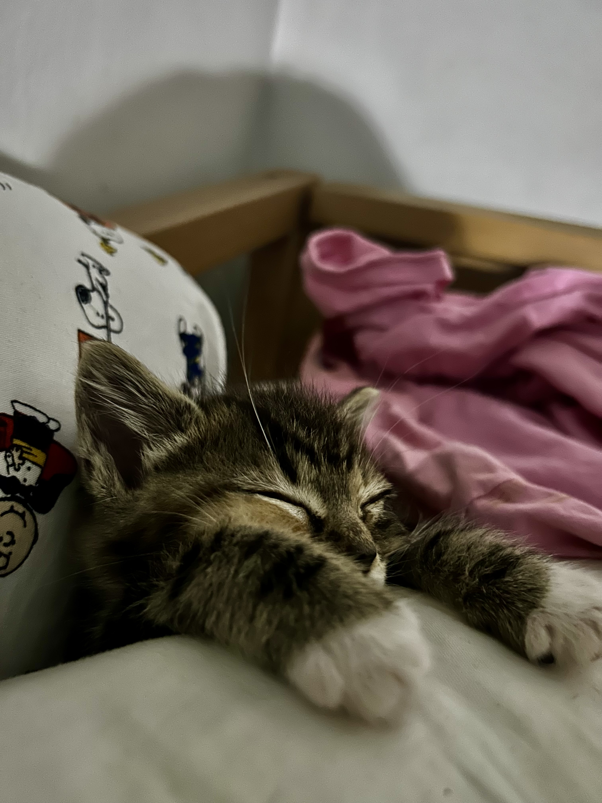
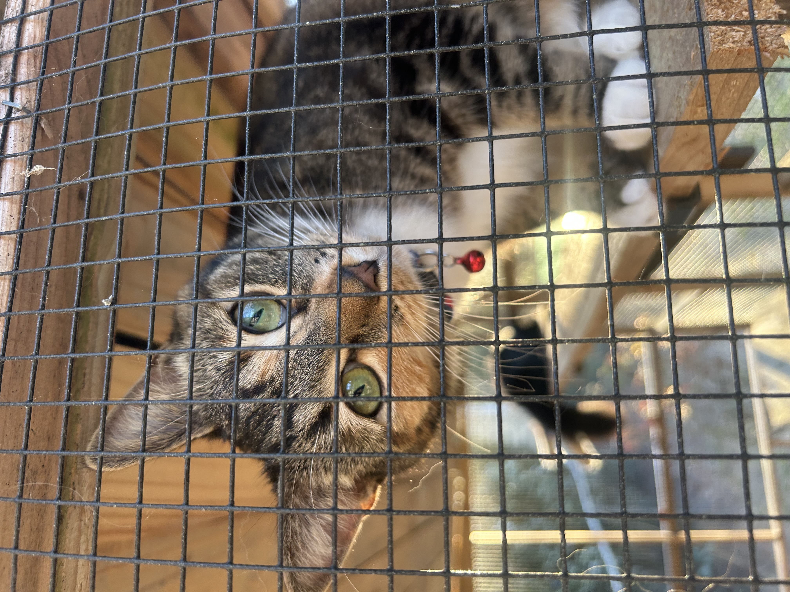

Junie B. Jones came into my life when she was just 3 weeks old. She was extremely small and very fiesty. She is now almost a two year old dwarf tabby calico cat!
She takes special supplements weekly to help her immune system and her joints as she is so small that she had issues with them properly developing.
She may be small but she is the ruler of the house. She is medically a bit fragile because of her dwarfism, but she never lets that stop her from creating chaos!
Now, Junie is healthy and thriving, and she inspires me every day to help other rescue cats.
